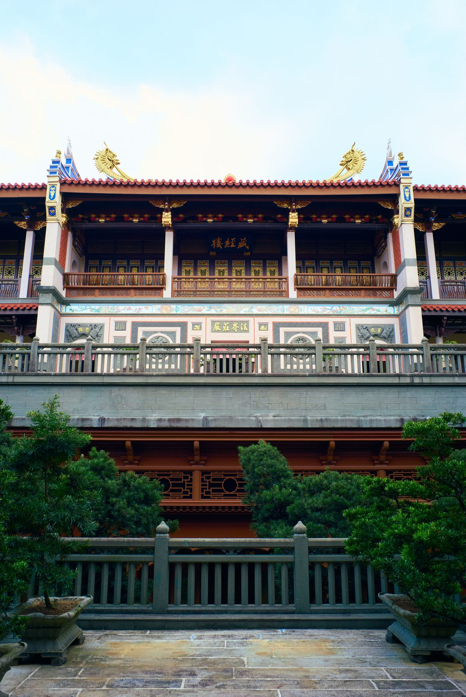
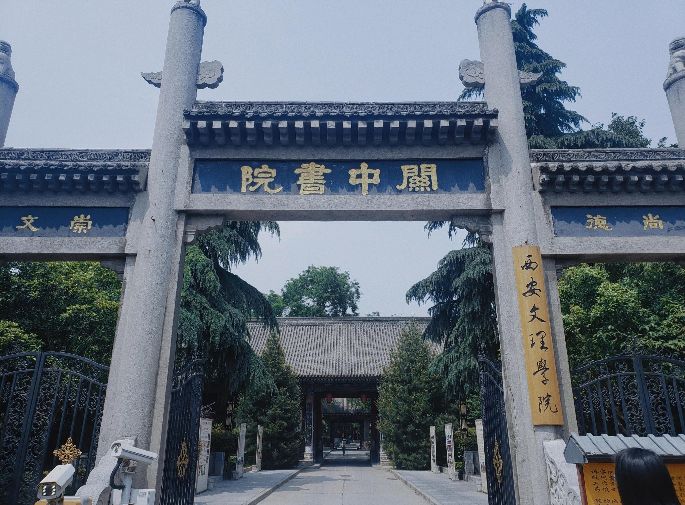
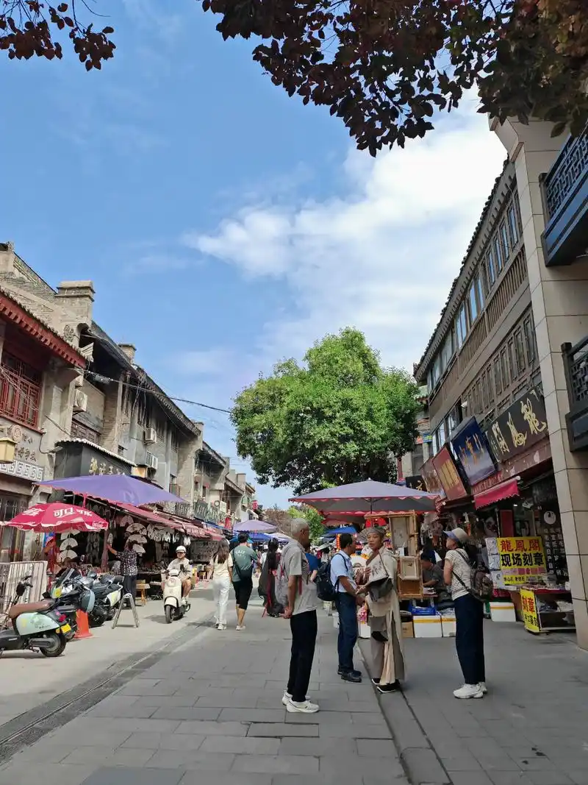
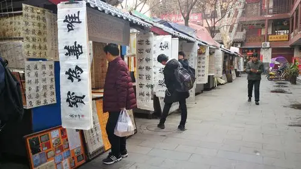
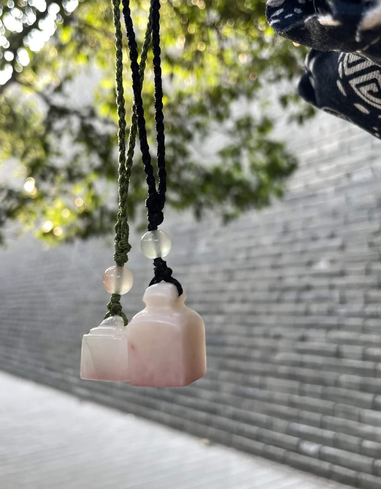
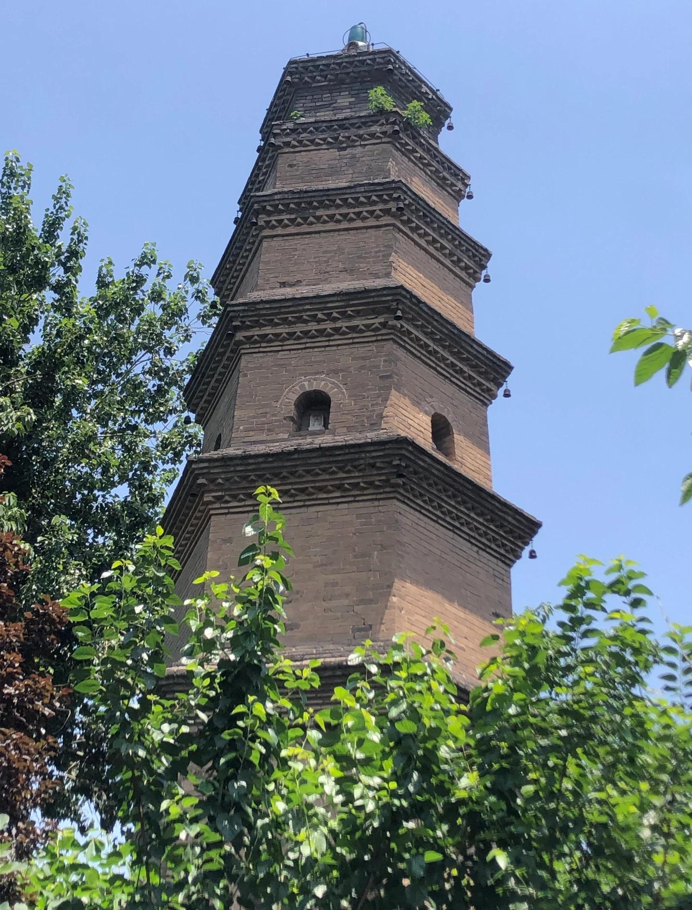

书院门位于西安城南门（永宁门）内东侧，西起南大街，东至文昌门，全长约500米。因明代陕西最高学府"关中书院"坐落于此而得名。关中书院由著名理学家、陕西提学副使冯从吾于明万历二十年（1592年）创建，是明清两代陕西乃至整个西北地区的最高学府，与湖南岳麓书院、江西白鹿洞书院等齐名，为中国古代四大书院之一。
冯从吾是明代关学（张载开创的关中理学学派）的集大成者，因不满朝政腐败而辞官归里，在西安宝庆寺讲学，四方学子闻风而至，人数多达五千余人，遂创建关中书院以容纳日益增多的学生。明万历皇帝曾亲题"关中书院"匾额，清代康熙皇帝亦赐"学达性天"匾。书院在明清两代培养了无数人才，直到1902年停办改制，存续了310年。

关中书院主体建筑至今保存完好，现为西安文理学院（关中书院校区）——一所学校在同一地点延续了四百余年，堪称中国教育史上的奇观。书院内的"允执堂"（讲堂）、"精一堂"（藏书楼）等古建筑仍保留着明清时期的风貌，院内古树参天，碑石林立，书香氤氲。参观者可以免费进入校园，在教学楼之间感受古老书院的宁静氛围。
以关中书院为核心，书院门街区在20世纪末逐渐演变为西安最具文化底蕴的传统步行街。青石板铺就的街道两旁，明清风格的店铺鳞次栉比。这里没有喧嚣的酒吧和快餐店，取而代之的是文房四宝店、碑帖拓片铺、古旧书店、字画装裱店、篆刻印章铺和古玩杂项店。
走在书院门的街上，空气中弥漫着墨香和宣纸的气息。店铺里，老艺人正在手工制作毛笔（"西安侯店毛笔"是非物质文化遗产）；隔壁铺子里，匠人用刻刀在石料上雕琢印章；转角处的旧书摊上，也许能淘到一本泛黄的线装古籍。街边的摊贩出售着蓝田玉雕、秦绣、皮影、剪纸等陕西民间工艺品，价格公道，是购买西安文化伴手礼的最佳去处。
书院门东接西安碑林博物院，西连南门（永宁门）和城墙入口。从碑林出来，沿着书院门向西漫步，在笔墨店中流连，到宝庆寺塔（明代）下驻足——这条短短500米的街道，浓缩了西安作为"文化之城"的精髓。它不像回民街那样喧闹，却承载着更深厚的人文底蕴。
"为天地立心，为生民立命，为往圣继绝学，为万世开太平。" —— 张载（关学创始人，关中书院的精神源头）




| 地址 | 西安市碑林区南门内东侧（永宁门至文昌门之间） |
|---|---|
| 开放时间 | 全天开放（各店铺通常 09:00—19:00 营业） |
| 门票 | 免费；关中书院（西安文理学院校区）可免费入内参观 |
| 交通 | 地铁 2 号线永宁门站 D2 口出，从南门向东步行约3分钟 |
| 小贴士 | 书院门 — 碑林博物院 — 城墙（永宁门）可串联游览（半天）；购买拓片和毛笔可适当砍价；街上有不少传统手艺人在店门口现场制作，拍照前建议先问一声 |